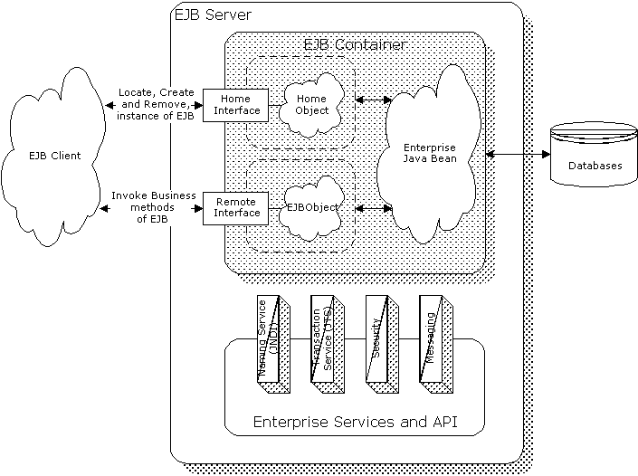

The
EJB Model
Gopalan Suresh Raj
A basic EJB architecture is shown in the Figure below and consists of:
 Figure: The Basic Enterprise Java Bean Architecture. |
Now, let us examine the primary components of the EJB architecture in greater detail:
EJB servers
The EJB server provides an
organized framework or execution environment for EJB containers
to run in. It makes available system services for
multiprocessing, load-balancing, and device access for EJB
containers. The EJB server also makes EJB containers running
within them visible to the outside world. The EJB server may also
provide vendor specific features like an optimized data access
interface, additional CORBAServices, SSL support etc. The EJB
server is also required to provide JNDI-accessible naming service
and transaction management services.
In some respects, the EJB server is analogous to CORBA’s Object Transaction Monitor (OTM). The OTM too provides an execution framework for running server side CORBA components.
EJB containers
An EJB container acts as the
interface between an enterprise Bean and low-level,
platform-specific functionality that supports the Bean. In
essence, the EJB container is an abstraction that manages one or
more EJB classes while making the required services available to
EJB classes through standard interfaces as defined in the EJB
specification. The container vendor is also free to provide
additional services implemented at either the container or the
server level. An EJB client never accesses a Bean directly. Any
Bean access is done through the methods of the
container-generated classes, which in turn invoke the Bean's
methods.
Having the container interpose on all Bean invocations allows the container to manage transactions, load Bean instances if necessary, and in general to do all the wonderful things that EJBs do.
There are two types of containers: Session containers that may contain transient, non-persistent EJBs whose states are not saved at all and entity containers that contain persistent EJBs whose states are saved between invocations.
The EJB Home interface and Home object
Factory methods for
locating, creating and removing instances of EJB classes are
defined in the EJB Home interface. The Home object is the
implementation of the Home interface. The EJB developer defines
the Home interface for his Bean. The EJB container vendor
provides tools that automatically generate the implementation
code for the home interface defined by the EJB developer.
The Remote interface and EJBObject
The remote interface lists
the business methods available for the enterprise Bean. The
EJBObject is the client’s view of the enterprise Bean and
implements the remote interface. While the enterprise Bean
developer defines the remote interface, the container vendor
provides the tools necessary to generate the implementation code
for the corresponding EJBObject. However, it should be noted that
the EJB container is still responsible for managing the
EJBObject. Each time the client invokes the EJBObject’s
methods, the EJB container first handles the request before
delegating it to the enterprise Bean.
The Enterprise JavaBean
The real EJB Bean itself is
contained within an EJB container, and should never be directly
accessed by anyone but the container. Although direct access may
be possible, it is inadvisable as that breaks the contract
between the Bean and the container.
The EJB container should mediate all EJB Bean accesses. For this reason, the EJB Bean developer does not implement the remote interface within the EJB Bean itself. The implementation code for the remote interface is generated automatically by tools that the container vendor provides. This prevents inadvertent direct accesses from clients or other beans.
The EJB Clients
EJB clients locate the
specific EJB container that contains the enterprise Bean through
the Java Naming and Directory Interface (JNDI). They then make
use of the EJB container to invoke Bean methods. The EJB client
only gets a reference to an EJBObject instance and never really gets a
reference to the actual EJB Bean instance itself. When the client
invokes a method, the EJBObject receives the request and
delegates it to the corresponding Bean instance while providing
any necessary wrapping functionality.
The client uses the Home object to locate, create or destroy instances of an EJB class. It uses the EJBObject instance, to invoke the business methods of a Bean
click here to go to
My EJB HomePage...
| About the Author... |
| Gopalan Suresh Raj is a Software Architect, Developer and an active Author. He is contributing author to a couple of books "Enterprise Java Computing-Applications and Architecture" and "The Awesome Power of JavaBeans". His expertise spans enterprise component architectures and distributed object computing. Visit him at his Web Cornucopia© site (http://www.execpc.com/~gopalan) or mail him at gopalan@execpc.com. |
|
This site was developed and is maintained by Gopalan Suresh Raj This page has been visited |
|
Last Updated : Dec 19, '98 |
||
Copyright (c) 1997-98, Gopalan Suresh Raj - All rights reserved. Terms of use. |
All products and companies mentioned at this site are trademarks of their respective owners. |